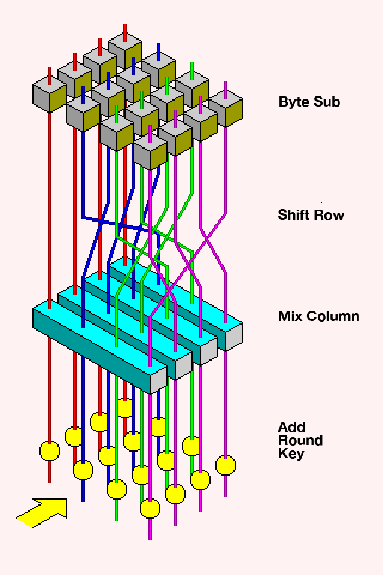
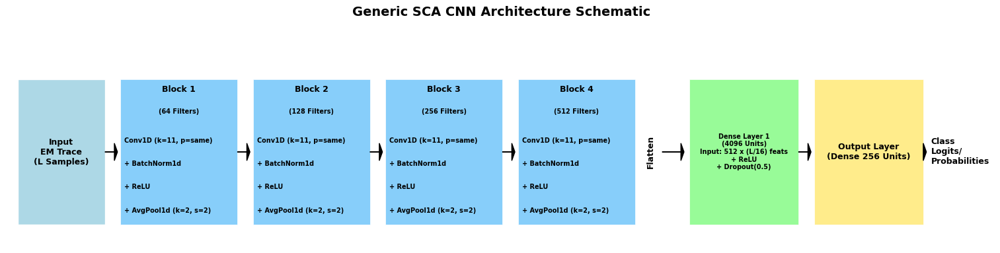
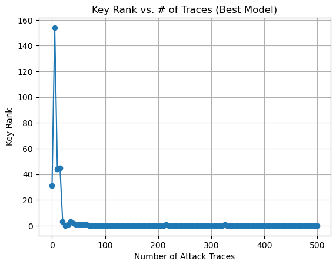

Technical Methodology
Target: AES S-Box Operation
The attack targets the output of the first-round AES S-box operation. The S-box input for a byte $i$ is $\text{Plaintext}[i] \oplus \text{Key}[i]$. The output is:
$\textit{Sbox_Output}[i] =$ $\textit{Sbox} (\textit{Plaintext}[i] \oplus \textit{Key}[i])$
Predicting this 256-class output allows deduction of the key byte. We target the 3rd key byte (index 2).

Fig 1: Basic Steps of an AES Encryption Round
Attack Mechanics in Detail
The side-channel leakage occurs primarily in the first masked multiplier of the S-box operation, where XOR gates absorb different numbers of transitions for different data inputs. This creates distinctive power consumption patterns that correlate directly with the processed data values.
Our attack adopts a value-based leakage model, assuming the EM trace contains information correlated with the specific value (0-255) of the S-box output. Since this output depends on both the known plaintext and unknown key, predicting it allows us to deduce the key byte through a 256-class classification problem.
Key Rank Metric: Technical Details
The superiority of Key Rank over standard accuracy stems from the nature of side-channel attacks. With low signal-to-noise ratio, perfect classification of every trace is unrealistic. Instead, our goal is to distinguish the correct key from 255 incorrect hypotheses by aggregating subtle evidence across numerous traces.
For each key hypothesis \(k_{guess}\) (0-255), we calculate:
$Score(k_{guess})\ =$ $\sum_{i=1}^{N} \log(P(label=Z\_hyp\_i | trace_i) + \varepsilon)$
Where \(Z\_hyp\_i = Sbox(plaintext_i \oplus k_{guess})\) for each trace \(i\), and \(\varepsilon\) is a small constant to prevent \(\log(0)\). The logarithm converts probability multiplications to additions, improving computational efficiency.
Feature Importance Analysis
Our feature selection approach using Random Forest's Gini importance showed that EM leakage is distributed across the trace but concentrated in specific time regions. By selecting only the top 100 features, we reduced the number of attack traces required by approximately 50% for ASCADf and 40% for ASCADv.
This dimensionality reduction mitigates overfitting and focuses on the most informative leakage points, significantly improving model efficiency while maintaining attack effectiveness.
Dataset & Preprocessing
Utilizes the public ASCAD 'fixed-key' (ASCADf: 50k training, 10k attack traces, 700 samples/trace) and 'variable-key' (ASCADv: 200k training, 100k attack traces, 1400 samples/trace) datasets. Raw EM traces are standardized (zero mean, unit variance) based on the profiling set.
Machine Learning Models
Random Forest(RF): Ensemble of decision trees $n\_estimators=100$, $max\_depth=20$, $min\_samples\_leaf=10$. Used for classification and Gini importance-based feature selection (top 100 features).
Support Vector Machine (SVM): Trained on reduced features with RBF kernel.
Convolutional Neural Network (CNN): Custom PyTorch CNN with 4 convolutional blocks (Conv1D, BatchNorm, ReLU, AvgPool1D) followed by dense layers. Inspired by existing SCA literature.

Fig 2: CNN Architecture for SCA
Evaluation: Key Rank
Primary metric is Key Rank. For N attack traces, it involves:
1. Obtaining model's probability distribution for S-box output for each trace.
2. For each key byte hypothesis (0-255), calculate hypothetical S-box outputs and sum log-probabilities from the model.
3. Rank key hypotheses by their total score.
Rank 0 for the true key means successful recovery. This metric aggregates evidence across traces, effective even with low per-trace accuracy.

Fig 3: Example Key Rank Chart